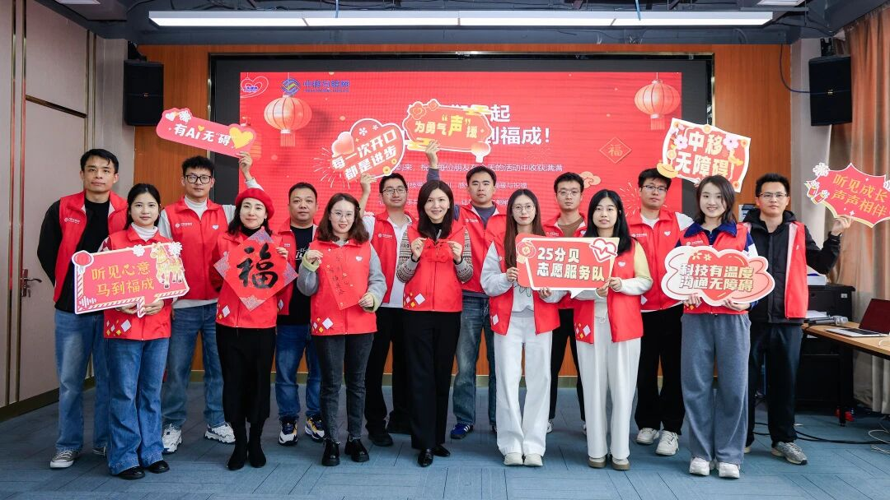
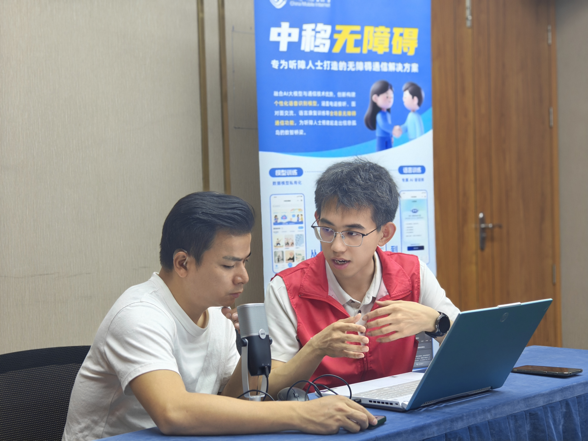
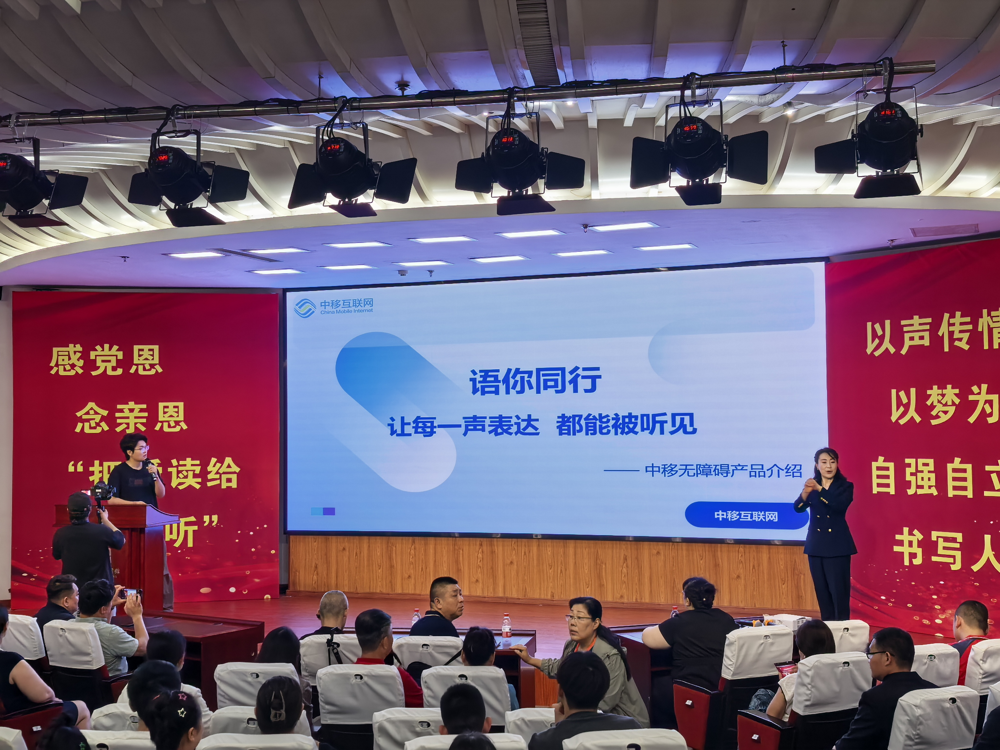
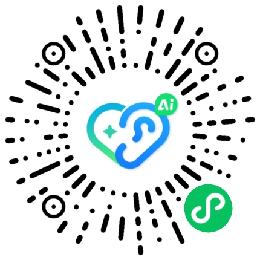
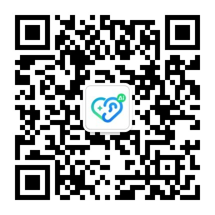

普及听障知识与沟通技巧
中国移动25分贝志愿服务队
我们用科技，陪伴每一次表达
我们是中移互联网公司的“25分贝”志愿服务队，聚焦残障朋友的真实需求，和社会多方力量共同努力，通过科技手段，为残障朋友提供更多的工具选择。
我们的使命
让技术成为更温和的支持，让每一次沟通、训练和生活求助都有更多可能。
进行一对一陪伴式语言训练
提供中移无障碍产品支持使用讲解



为什么需要它
沟通不是小事
有些话不是不想说，而是说出口之后，仍需要被反复确认。无障碍沟通的意义，是让普通生活里的每一次表达少一点阻隔。
家庭沟通
想和家人说清楚今天的安排、身体的不适、心里的想法。被理解，是亲密关系里最朴素也最重要的支持。
日常办事
窗口咨询、购物付款、问路乘车，都可能需要多次确认。更顺畅的表达，让独立完成生活小事变得更从容。
康复训练
训练不是一次完成的任务，而是一段需要反馈和鼓励的长期过程。看见进步，才更容易坚持下去。
公益行动成果
每一次活动，都是一次真实的靠近
6场活动
229+参与人次
3覆盖地区
7相关报道
匿名用户故事
改变往往从一句更顺畅的表达开始
扫码了解更多
打开小程序，关注公众号
这里已预留两个二维码位置，后续可分别放入中移无障碍小程序二维码和公众号二维码。

中移无障碍小程序
用于体验自由说话练习、跟我说和面对面沟通等功能。

25分贝志愿服务队公众号
用于了解公益活动、服务动态和无障碍沟通知识。